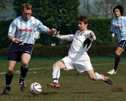
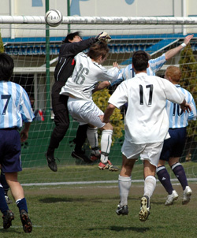
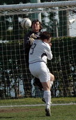
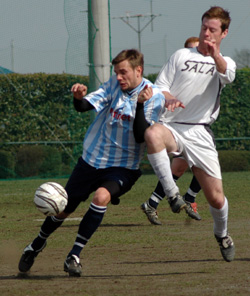

|
YC&AC, Saturday 10th March, The great white bandwagon that is Sala rolled up to YCAC on Saturday knowing that a win was vital to keep up with pacesetters BFC.
With Hibs and Swiss contriving to lose more matches in the last month than they have in the previous three seasons, the chance was there for Sala or YCAC to open up a gap on the Old Firm and remind the league leaders that the fat lady hasn’t finished warming up her vocal chords quite yet. And of course it was a nil-nil draw…
Sala have had happy hunting in Yokohama in recent years, but as far as YCAC, I’m sure they could care less (sic) about such talk, and as everybody knows they are one of the better footballing teams in the league (which is surely a handy quality to have given the nature of the sport) despite playing every match on a pitch with more bobbles than a Christmas tree and which could be an important research site in the ongoing fight against desertification.
 The details: Sala missing the spine of their team in talismanic captain and centre half Kaiser Geisler, Colombian guard dog Munera and effeminate Aussie hitman Bedingfield. YCAC had a severe lack of substitutes and will no doubt point this out as the battle of excuses drags its tawdry haunches into this public forum.
The weather: Bright and windy with a hint of frustration.
The going: Good to sub-Saharan.
Sala enjoyed a mixed first half, with YCAC dominating the opening exchanges whilst threatening goal on only a few occasions. But soon Sala found their feet and were regularly seen crossing the halfway line, with forays occasionally reaching the opposition box (although usually just the edge of it)
YCAC came closest when their Japanese defender got up well to head a corner just past the far post, though Sid claimed he had it covered.
Sala were content to continue their direct style with Ian, Doug and Dan rarely thinking twice when there was an opportunity to horse the ball 60 yards into the opposing half, and Clarkey looking like he would have kicked a dog if it ran onto the pitch. One should never underestimate the effect this has on the minds of the opposition strikers though. Nothing is more depressing than seeing a player kick the ball sixty yards over your head and knowing that it may not be back for another ten minutes.
 Sala recorded a TML record of 114 throw-ins in a single half, all down the left side but could little capitalize on them. Possession seemed to me more and more a word referring to exorcism than football and the half time whistle was a welcome relief.
The second half saw the wind pick up, and it blew strongly in YCAC’s favour (Awfully unfair if you ask me), allowing them to lay siege to the Sala goal for much of the second half. Despite this though, they very rarely troubled Sid with a legitimate shot on target. The wind became an increasingly controlling factor the longer the game went on and Joe Takeda’s corner kicks spent more time off the pitch than the entire Sala bench.
He did however provide the moment closest to breaking the deadlock, quickly taking a free-kick from the edge of the box which Sid failed to claw out of the net. The referee though decided to disallow it for reasons too numerous to mention, the main one being that he was actually counting out the ten yards for Sala’s wall when the ball fizzed past his head. In his delirium though, Joe made it all the way over to the Sala substitute’s bench sliding in on one knee (which must have hurt) and posing arms aloft, blissfully unaware that his strike had not counted. Sala, being old fashioned gent’s to a man, decided to let him celebrate away to himself until he was rescued by a member of his own team who had a quiet word in his ear. Anyhoo…
 Sala did create the closest couple of chances in the game towards the end. Firstly, Toby’s square pass to Charles the golden footed god, bobbled through to Scotty unmarked at the back post. He seemed to have made a meal of things when his first touch flicked the ball yards into the air, but it’s not easy to make a monkey of young Scott and he adeptly volleyed at goal, missing the top corner by a lick of paint.
Then, from nowhere, Brookey’s persistence paid off on the edge of the YCAC box and he managed to knock it into the path of Toby, whose snap shot had the best connection of any in the game. Sadly for Sala it whistled inches wide of the upright and in fairness I think we would have been pushing our luck a bit by snatching a winner there.
Sala finished as they started, on the back foot, but although YCAC will be disappointed not to take three points out of this one, they never really had their shooting boots on and could have ended up even more frustrated than they probably were, had Sala been a little more ruthless.
Frustration from both sides saw the niggling stakes rise towards the final whistle, and YCAC felt the power of Jelley in a bout of handbags. In the end though everyone calmed down and hands were shaken at full time as gentlemanly protocol dictates.
Still, I bet BFC are a happy bunch of boys, and at the end of the day, that’s all that matters…
Report by Lethargio.
|